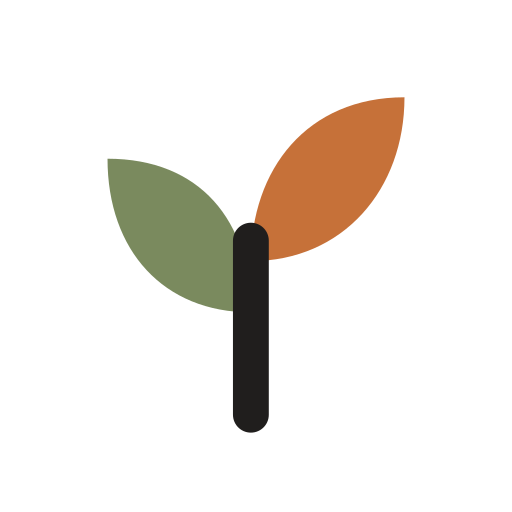

1 in 3
KU Leuven freshmen (n = 4,921) reported a mental health problem in the past year. These problems went with a lower academic year percentage.
Bruffaerts et al., J. Affective Disorders, 2018CalmCampus helps students notice the early signs of burnout and take one small step while it is still easy. A minute a day, and your data stays on your phone.
No cloud AI, no analytics, no accounts needed to look around.

1 of 3It rarely arrives overnight. Sleep slips, days get smaller, deadlines stack up. Most students only reach out once it already feels heavy, and by then the way back is longer.
Student services mostly meet students after a rough patch has set in. We want to be there in the weeks before.
Stigma, waiting lists and not knowing where to start keep many students from reaching out at all.
Sleep, movement and mood tell a story over time. Nobody sees it, least of all the student living in the middle of it.
CalmCampus is a native iPhone app, with Android to follow. It listens a little, asks a little, and suggests something small that fits your day.
Three quick questions about mood, energy and stress. Every question can be skipped. When something looks off, like a short night, it may ask one gentle follow-up. Never more than five in total.
Sleep and activity from your phone are compared with your own normal, not with other people. Missing data stays missing. We never fill gaps with guesses.
Short breathing and grounding exercises, plus pointers to your university's student support when you want a person to talk to. We are bringing these across from our first prototype.
Privacy is how the app is built, not a line in a policy. What you share with CalmCampus is for you, and it never becomes something a university can look up.
Check-ins and sensor data are stored on your phone. There is no server holding them.
Any AI runs on the device itself. Nothing you write is sent to an outside service.
No trackers and no ad networks. Nothing about an individual student reaches the university.
CalmCampus spots early signs and supports good habits. It does not diagnose or replace professional care.
We reviewed 35 studies and reports. The need is well documented, and so are the early warning signs we look at. What is still open is whether CalmCampus itself helps. That is exactly what the pilot is for.
Read the full evidence dossier (PDF)KU Leuven freshmen (n = 4,921) reported a mental health problem in the past year. These problems went with a lower academic year percentage.
Bruffaerts et al., J. Affective Disorders, 2018of 13,984 first-year students in 8 countries, Belgium included, screened positive for a common mental health condition at some point in their life (31% in the past year).
Auerbach et al., J. Abnormal Psychology, 2018of 27,446 Dutch students in the 2025 national monitor were flourishing. Five of ten wellbeing measures had improved since 2021.
Nuijen et al., RIVM and Trimbos, 2025of first-years said they would definitely seek help for an emotional problem. The most common reason not to: wanting to handle it alone (56.4%).
Ebert et al., Int. J. Methods in Psychiatric Research, 2019Insomnia at the start was linked to roughly three times the odds of later depression (OR 2.83) and anxiety (OR 3.23) across longitudinal studies.
Hertenstein et al., Sleep Medicine Reviews, 2019Digital self-help helps students a little: g = 0.18 for depression and 0.20 for stress in 48 trials. We take that as a reason to measure carefully.
Harrer et al., Int. J. Methods in Psychiatric Research, 2019A phone-based depression model looked accurate in 57 students (AUC 0.82) and was close to chance in a mixed sample of 5,262 (AUC 0.57). That is why we compare each student with their own baseline, and ask them directly.
Müller et al., Scientific Reports, 2021top-ranked depression and smoking-cessation apps sent data to third parties, often without saying so. Keeping data on the phone avoids this one risk.
Huckvale et al., JAMA Network Open, 2019of mental health app users were still active after 30 days in real-world data. Keeping students engaged is our biggest challenge, and we will measure it.
Baumel et al., J. Medical Internet Research, 2019Questions only. There are no results yet, and the protocol is still being written with researchers and ethics advisers.
We intend to share what we find openly, including results that do not favour us.
Work with us on the researchLeuven is where CalmCampus began, at the KU Leuven KICK Challenge 2026. The pilot is the next step: put the app in real students' hands, learn what helps, and do it carefully.
The pilot is still being shaped and nothing is final yet. Pilot participation will be voluntary, and everything we measure will stay on-device unless a participant chooses otherwise.
We would rather get one campus right than reach many campuses badly. Each step builds on what the previous one teaches us.
A native app with the adaptive daily check-in. Android is next, built natively too.
Preparing the first pilot with students and student services in Leuven.
Bring what worked to other Flemish and Belgian universities and university colleges.
Partner with Dutch universities, with local support contacts and wording for each campus.
Whether you study, teach, counsel, research or fund, we would like to hear from you. We reply to every message.
Want to try the app early or share what would help? Tell us about your study life.
Interested in a pilot at your institution in Belgium or the Netherlands? Let us talk.
Care about student wellbeing and privacy-first technology? We would love to explore it together.